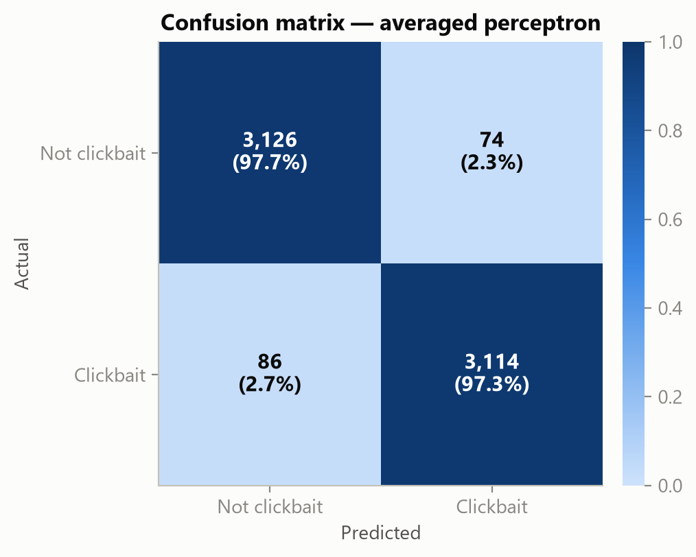
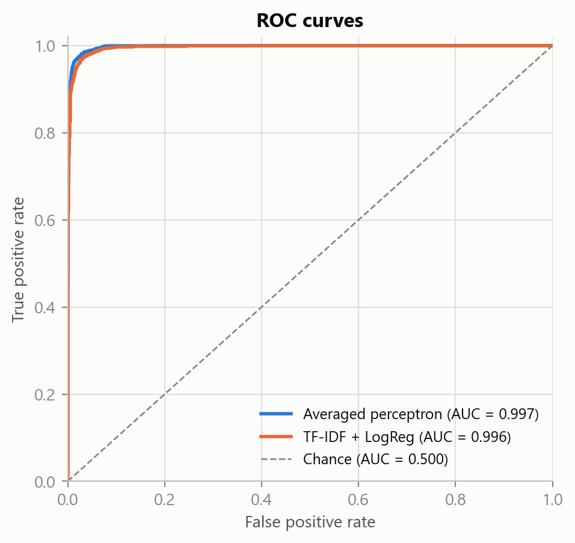

Perceptron-Based Text Classification for Detecting Clickbait Headlines
I. Introduction
Online publishers compete for attention, and a common tactic is the clickbait headline: a phrasing engineered to open a "curiosity gap" the reader can close only by clicking, often without delivering proportional information. At scale, clickbait erodes trust and distorts the incentives of digital journalism, which motivates automatic detection as a content-quality and recommendation-filtering problem.
State-of-the-art detectors increasingly use deep neural networks over learned word or character embeddings. These models are accurate but opaque: they offer little insight into which linguistic properties make a headline clickbait. For an editorial or media-literacy setting, that explanation is often as valuable as the label itself.
This paper takes the opposite, interpretability-first stance. We ask how far a linear model driven by a small set of transparent, hand-crafted features can go. Concretely, our contributions are:
(1) an averaged perceptron implemented from scratch in NumPy, including the efficient weight-averaging trick and explicit convergence tracking; (2) a bank of 33 interpretable lexical/stylistic features spanning twelve linguistic families; (3) a controlled comparison against a black-box TF-IDF + Logistic Regression baseline on equal footing; and (4) an interpretability analysis that ranks the cues most predictive of clickbait and decomposes individual predictions into per-feature contributions.
Our central finding is that the interpretable model is not merely competitive but marginally better than the opaque baseline, while exposing the cues it relies on — supporting the view that feature-based learning complements, rather than is superseded by, neural detectors.
II. Related Work
Chakraborty et al. introduced the Stop Clickbait corpus and an SVM over hand-crafted features, establishing feature-based clickbait detection as a strong baseline [1]. Potthast et al. framed clickbait detection for social media and organized the Clickbait Challenge [5], while Biyani et al. emphasized article informality as a signal [6]. Anand et al. later applied recurrent and character-level neural networks, trading interpretability for representational power [7].
Methodologically we build on the classical perceptron [2] and, in particular, its averaged/voted variant, which markedly improves generalization at negligible cost [3]; averaged perceptrons are a staple of discriminative NLP [4]. Our work differs by treating the interpretability of the learned weights as a first-class objective rather than a by-product, and by benchmarking the transparent model directly against a high-dimensional black-box on the same split.
III. Dataset
We use the Stop Clickbait corpus [1]: 32,000 English headlines labelled clickbait (1) or not clickbait (0). The clickbait side is drawn from outlets such as BuzzFeed and Upworthy; the non-clickbait side from mainstream agencies (e.g., The New York Times, The Guardian, Reuters/WikiNews). The classes are almost perfectly balanced (15,999 vs. 16,001), so accuracy is a meaningful headline metric. Headlines average 9.07 words (range 1–26). We hold out a stratified 20% test set (25,600 train / 6,400 test) with a fixed seed for reproducibility.
IV. Methodology
A. Preprocessing
Unlike typical pipelines, we deliberately preserve original casing and punctuation, because capitalization style (Title Case vs. sentence case) and marks such as "!", "?" and "…" are themselves strong stylistic cues. Cleaning is limited to Unicode NFKC normalization and whitespace collapsing; lowercasing is applied only where a case-insensitive lexical match is required.
B. Engineered features
Each headline is mapped to a 33-dimensional vector of named features grouped into twelve families (Table I): numeric/listicle cues, reader address (second-/first-person), forward reference (cataphora), a curated clickbait-phrase lexicon, interrogative structure, hyperbole (superlatives/intensifiers), punctuation style, length statistics, capitalization, informal register (slang), affect lexicons, and function-word ratio. A name→function registry guarantees the feature matrix and the feature names can never drift out of sync.
| Family | Example features |
|---|---|
| Numeric / listicle | starts_with_number, contains_year |
| Reader address | second_person_count, first_person_count |
| Forward reference | demonstrative_count, has_forward_reference |
| Clickbait phrases | clickbait_phrase_count |
| Interrogative | is_question, starts_with_question_word |
| Hyperbole | superlative_count, intensifier_count |
| Punctuation | exclamation_count, has_ellipsis |
| Length | word_count, avg_word_length |
| Capitalization | title_case_ratio, all_caps_ratio |
| Informal register | slang_count |
| Affect | positive/negative/emotional counts |
| Function words | stopword_ratio |
Before training, features are standardized (zero mean, unit variance). Standardization is essential for interpretation: it puts every weight on a common scale so that weight magnitude is comparable across features. To avoid leakage, the scaler is fit on the training fold only.
C. Averaged perceptron
The perceptron is an online, mistake-driven linear classifier. With labels mapped to {−1,+1}, for each example (x, y) it predicts ŷ = sign(w·x + b) and, on a mistake (y(w·x + b) ≤ 0), updates w ← w + ηy x and b ← b + ηy. We use the averaged variant [3], which predicts with the mean of all intermediate weight vectors rather than the last. Averaging sharply reduces variance and improves generalization while keeping the model linear and interpretable. We implement it with the efficient cached-accumulator trick (a single running sum instead of storing every iterate), and detect convergence as a full pass with zero updates.
D. Black-box baseline
As a strong opaque opponent we use TF-IDF over word 1–2 grams (sublinear term frequency, up to 20,000 features) feeding an L2-regularized Logistic Regression. This is the canonical high-dimensional text baseline: accurate but with no per-feature linguistic meaning, in contrast to our 33 named cues.
V. Experimental Setup
Both models are trained on the same stratified split and evaluated with accuracy, precision, recall, F1 and ROC-AUC. We additionally run 5-fold stratified cross-validation for the perceptron (scaler re-fit per fold) and verify our implementation against (i) the vanilla (non-averaged) perceptron and (ii) scikit-learn's Perceptron. All runs use a fixed seed (42); 33-feature extraction takes ≈86 µs/headline and training ≈2.4 s.

VI. Results and Discussion
Table II reports held-out test performance. The averaged perceptron reaches 97.56% accuracy and 0.9971 ROC-AUC, outperforming the black-box baseline (96.89%, 0.9957) despite using 33 features versus 20,000. Five-fold cross-validation confirms stability: 97.64% ± 0.17 accuracy and 0.9973 ± 0.0003 AUC.
| Model | Feat. | Acc. | Prec. | Rec. | F1 | AUC |
|---|---|---|---|---|---|---|
| Avg. perceptron (ours) | 33 | .9756 | .9777 | .9734 | .9756 | .9971 |
| TF-IDF + LogReg | 20k | .9689 | .9741 | .9634 | .9687 | .9957 |
| Variant | Accuracy |
|---|---|
| Vanilla perceptron (last weights) | .9700 |
| Averaged perceptron (ours) | .9756 |
| scikit-learn Perceptron | .9670 |
Table III isolates the effect of averaging: it adds ≈0.6 accuracy points over the vanilla variant and edges out scikit-learn's reference implementation, validating our from-scratch code. The confusion matrices (Fig. 2) show the perceptron makes both fewer false positives (71 vs. 82) and fewer false negatives (85 vs. 117) than the baseline.


VII. Interpretability Analysis
Because the model is linear over standardized features, the learned weights are directly readable (Fig. 4). The strongest clickbait signals are title_case_ratio (every word capitalized, BuzzFeed-style), clickbait_phrase_count (curiosity triggers such as "will make you", "you won't believe"), starts_with_auxiliary ("Can you guess…"), quotation marks, internet slang, and listicle numerals. The strongest legitimate-news signals are a trailing question mark on genuine questions, greater headline length in characters, and forward-reference/second-person absence.

Two apparent paradoxes are instructive. First, clickbait_phrase_count has a large positive weight while its binary counterpart has_clickbait_phrase is negative; together these correlated features encode a mild non-linearity (the number of triggers matters more than mere presence). Second, is_question is negative yet starts_with_question_word is positive: quiz-style clickbait ("Which Disney Princess Are You…") opens with a question word but rarely ends in "?", whereas hard-news questions do. The model thus learns a fine-grained interrogative distinction rather than a blanket rule. Per-headline decomposition (contribution = standardized value × weight) lets us explain single predictions, e.g. the dominant driver of "17 Things Only People Who Love Coffee Will Understand" is its all-capitalized title case and listicle numeral.
VIII. Limitations
The dominance of title_case_ratio partly reflects a house-style artifact of the corpus (clickbait sources capitalize every word; news agencies use sentence case). A model trained here may therefore learn source style as much as intrinsic clickbaitiness, which could reduce transfer to outlets with different conventions. The lexicons are English- and period-specific, and headline-only features ignore article content. Robust deployment would require cross-source evaluation and periodic lexicon updates.
IX. Conclusion
We showed that an averaged perceptron over 33 interpretable features matches and slightly exceeds a 20,000-feature black-box baseline for clickbait detection, while making its reasoning transparent: the weights rank the linguistic cues that signal clickbait, and individual predictions can be decomposed into per-feature contributions. Interpretable, feature-based learning thus remains a valuable complement to opaque neural detectors. Future work includes cross-source generalization tests, learned phrase features, and hybrid models that attach the same interpretable features to a neural backbone.
References
- A. Chakraborty, B. Paranjape, S. Kakarla, and N. Ganguly, "Stop Clickbait: Detecting and preventing clickbaits in online news media," in Proc. IEEE/ACM Int. Conf. Advances in Social Networks Analysis and Mining (ASONAM), 2016, pp. 9–16.
- F. Rosenblatt, "The perceptron: A probabilistic model for information storage and organization in the brain," Psychological Review, vol. 65, no. 6, pp. 386–408, 1958.
- Y. Freund and R. E. Schapire, "Large margin classification using the perceptron algorithm," Machine Learning, vol. 37, no. 3, pp. 277–296, 1999.
- M. Collins, "Discriminative training methods for hidden Markov models: Theory and experiments with perceptron algorithms," in Proc. EMNLP, 2002, pp. 1–8.
- M. Potthast, S. Köpsel, B. Stein, and M. Hagen, "Clickbait detection," in Proc. European Conf. Information Retrieval (ECIR), 2016, pp. 810–817.
- P. Biyani, K. Tsioutsiouliklis, and J. Blackmer, "'8 Amazing secrets for getting more clicks': Detecting clickbaits in news streams using article informality," in Proc. AAAI, 2016, pp. 94–100.
- A. Anand, T. Chakraborty, and N. Park, "We used neural networks to detect clickbaits: You won't believe what happened next!," in Proc. ECIR, 2017, pp. 541–547.
- F. Pedregosa et al., "Scikit-learn: Machine learning in Python," J. Machine Learning Research, vol. 12, pp. 2825–2830, 2011.
- C. D. Manning, P. Raghavan, and H. Schütze, Introduction to Information Retrieval. Cambridge, U.K.: Cambridge Univ. Press, 2008.
- H. Daumé III, A Course in Machine Learning, 2017. [Online]. Available: http://ciml.info